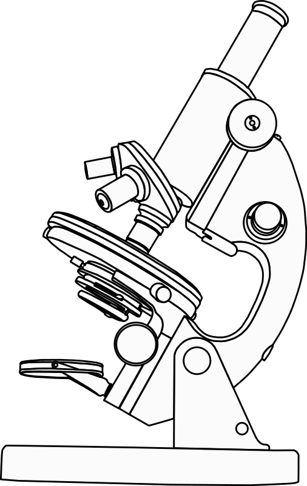

2011-09-22

Science ! Python! Unicorns! (and some important personnal news)
As a break from my "tradition" of not going into more "personal" stuff on this site , I thought I would share a bit of personal news , since well, it is very good news, and will have an impact on the various projects I post about...
It might have come to your attention, that my posts have been getting sparser in the last few months: and these are the main reasons for that:
- First and foremost , it is because of the heavy work I have been putting into my two main projects HydroDuino and Dobozweb ( see related post in a few days for a lot more details) and also because of a major piece of news :
- I am now officially working as a bio-informatician at the French research institute INRA in Versailles, (near Paris) , in the genomics and informatics unit (URGI) : and guess what,? I will be working a lot in Python ! So, major geeking out here , as you can guess!
Working in research (specifically Biology and Informatics) has been a dream of mine for... well forever , so I am still a quite bit "stunned" , it is the beginning of a new life in more ways that one!
So does this mean all my other projects will be abandoned?
- Fear not! They are still under way !
- Even if i will have less time to work on them, i have done some major refactoring this summer that should help implement new features and improve existing ones more easily (this should become more clear in the next article about Doboz-web and Hydroduino).
- I also did a presentation about Doboz-web last weekend at PyconFr (french Python conference) , which was an absolutely fantastic conference, with lots of great, passionate people, and interesting subjects , so i will do a more detailed write-up about that aswell soon!
As for the Unicorns in the title, well, they were likely dreaming of electric sheep...
Cheers!